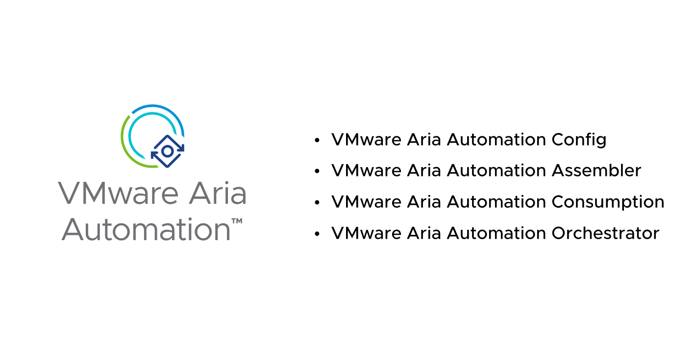
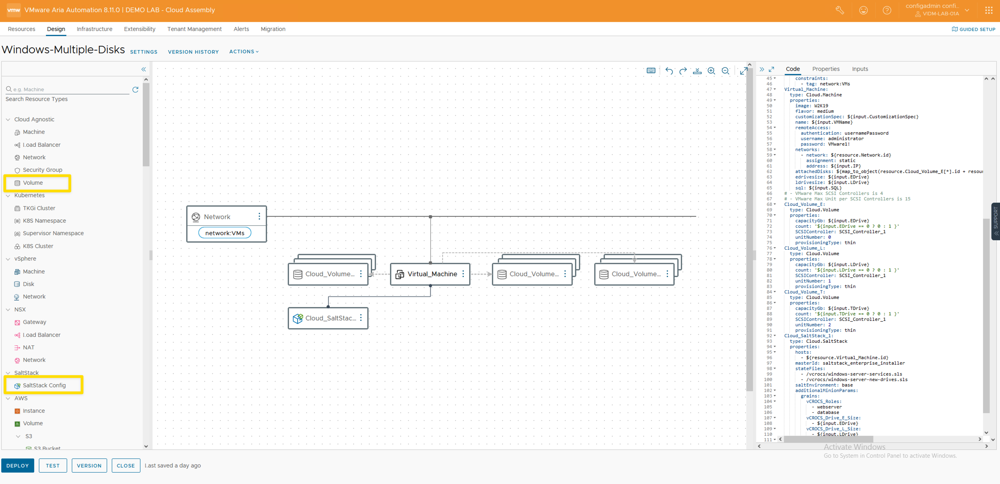
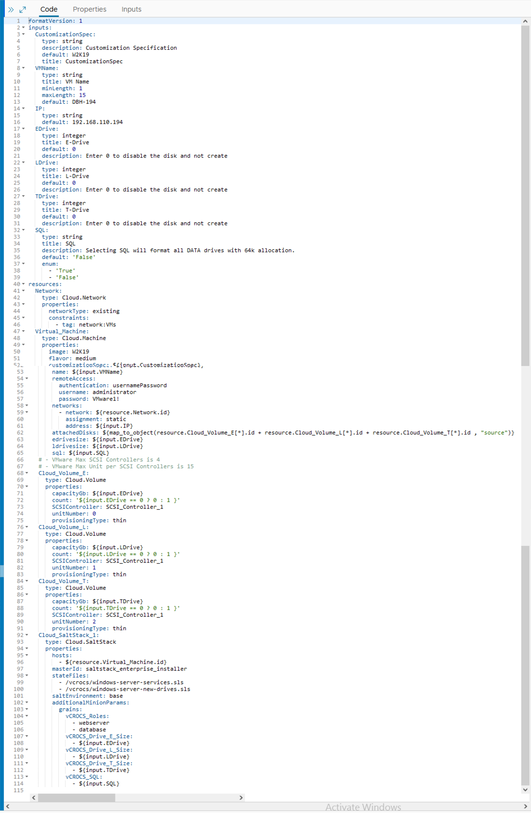
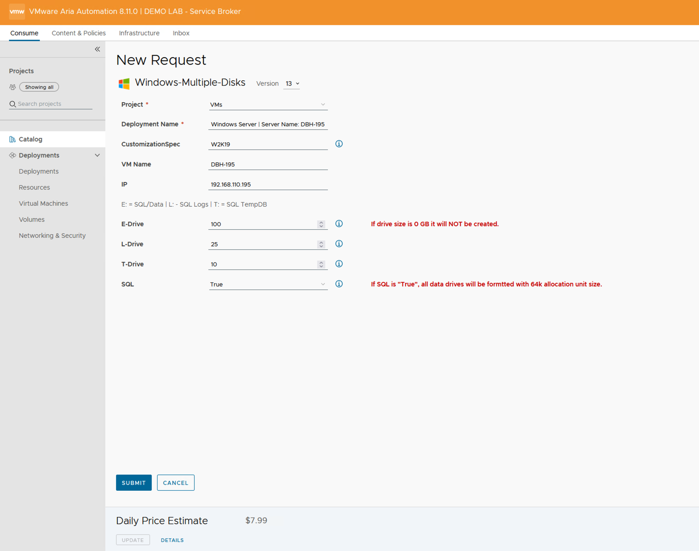
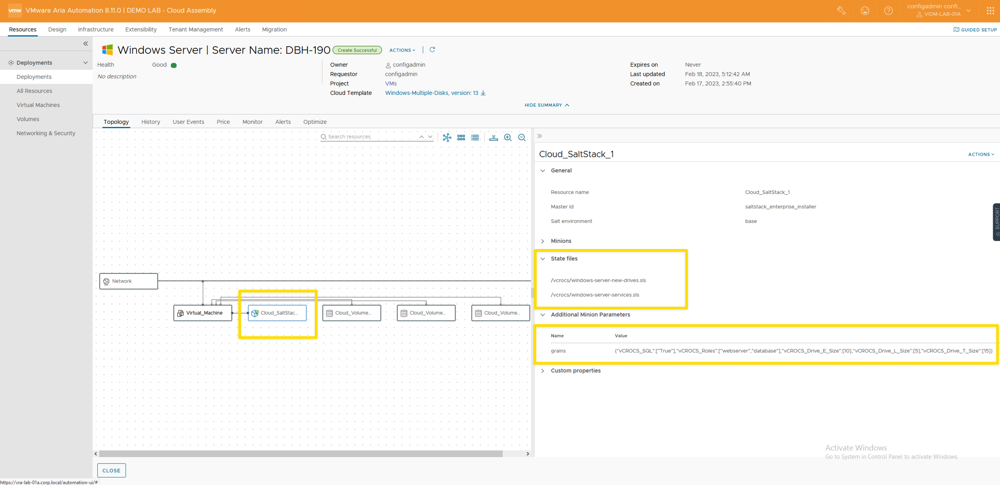
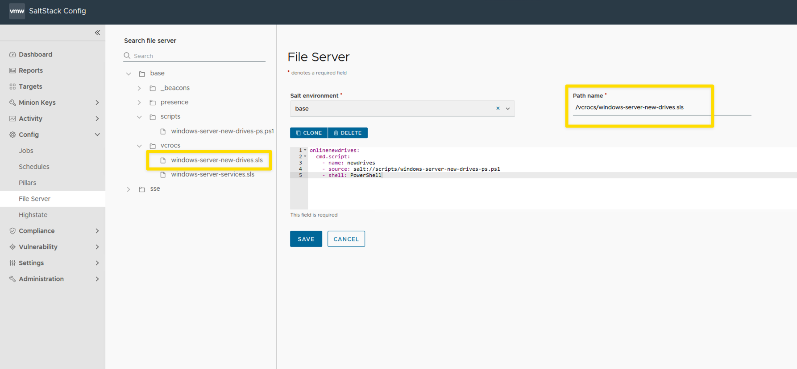
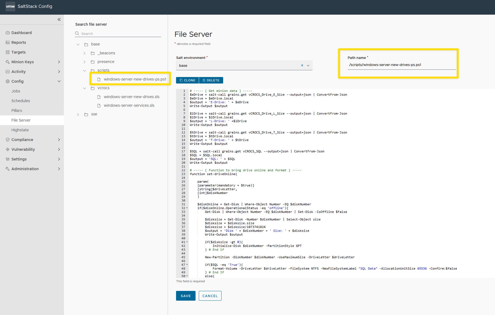
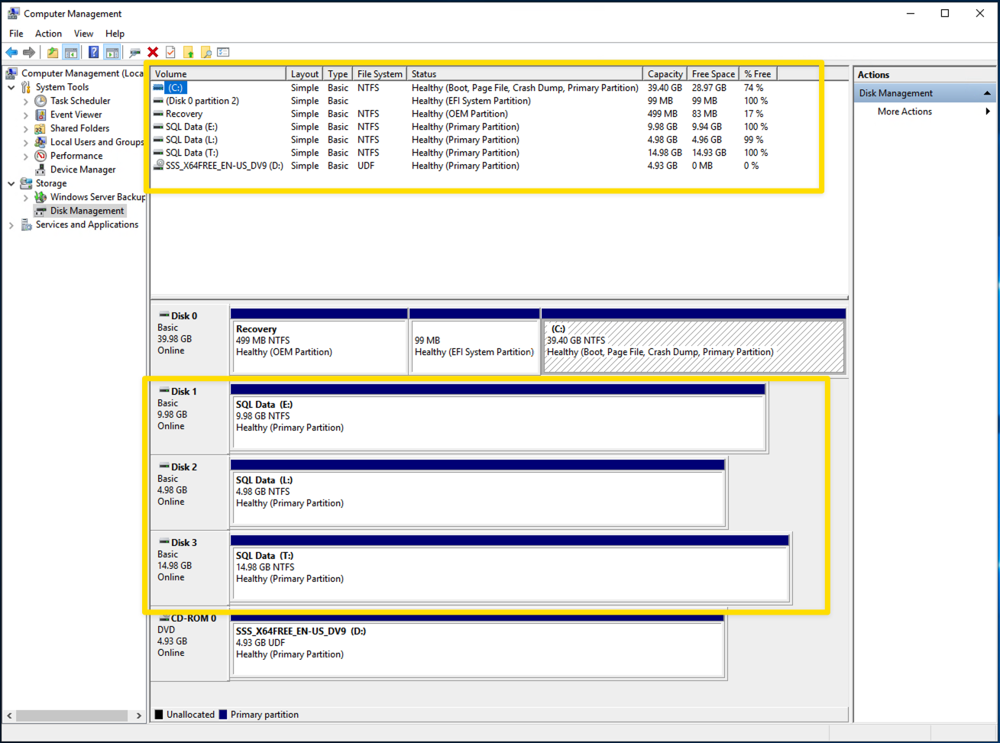
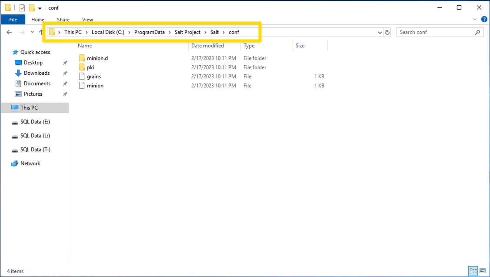
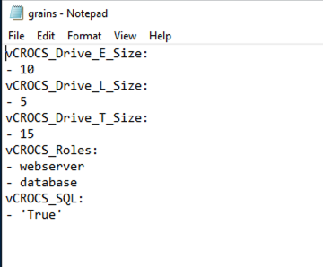

VMware Aria Automation | Working with Windows Server Drives

How to add Windows Server Drives to VMware Aria Automation Cloud Templates.
I want to create new Windows Servers in VMware Aria Automation that will be production ready when the server build process is complete. One item when building new Windows Servers is adding drives. I want a way to add additional drives and have the drive be online and formatted properly. Non SQL Windows Servers will have data drives formatted with 4k allocation unit size and Windows SQL Servers will have the data drives formatted with 64k allocation unit size. VMware Aria Automation provides a way to add drives OOTB (Out of the Box) but does not automatically format the drives. That is why I use a Salt state in my example. I use the salt state to bring the new drive online and format. This Blog post shows one way to accomplish these tasks. I always say, with automation there a 100 ways to do the same process. Hopefully this Blog gives you some ideas and options.
Use Case
- Add Cloud Agnostic Volumes to a VMware Aria Automation Cloud Template.
- To make New Windows Server Builds consistent I show the drives that are available on the Catalog Item Custom Form. You don't need to add any additional drives. Keep the drive sizes at the default size of "0" and the drives DO NOT get created.
- At the end of the new server build I want the new Windows Server drives to be online and formatted properly. Be production ready!
Steps to complete the process:
- [x] Automated Salt minion installation. See the Blog Post I wrote that completes this step. Click Here
- [x] Add grains data about the drives to minion when the minion installation completes. See example yaml code.
- [x] Run a state file when the minion installation completes that brings the new drive online and formats the drive so that it is ready to use immediately. See example yaml code.
Requirements:
- [x] This blog was created using VMware Aria Automation and VMware Aria Automation Config version 8.11.0 (Salt version 3005.1). The process may vary for different versions of VMware Aria Automation and Salt.
Cloud Template | Windows 2019 Server:
- There are (3) Cloud Agnostic Volumes on the Cloud Template for my use case. You can have as many as you want for your environment.
- The SaltStack Config Resource is added to the Cloud Template.

VMware Aria Automation Cloud Template file:

- Key elements to review in the yaml code:
- The yaml code includes grains that saves the drive information. These values are based on input from the Catalog custom form.
- the yaml code includes stateFiles to run.
- If the drive size input specified is equal to "0" then the drive count will be "0". Drive will NOT be created.
- Click to expand yaml code
formatVersion: 1
inputs:
CustomizationSpec:
type: string
description: Customization Specification
default: W2K19
title: CustomizationSpec
VMName:
type: string
title: VM Name
minLength: 1
maxLength: 15
default: DBH-194
IP:
type: string
default: 192.168.110.194
EDrive:
type: integer
title: E-Drive
default: 0
description: Enter 0 to disable the disk and not create
LDrive:
type: integer
title: L-Drive
default: 0
description: Enter 0 to disable the disk and not create
TDrive:
type: integer
title: T-Drive
default: 0
description: Enter 0 to disable the disk and not create
SQL:
type: string
title: SQL
description: Selecting SQL will format all DATA drives with 64k allocation.
default: 'False'
enum:
- 'True'
- 'False'
resources:
Network:
type: Cloud.Network
properties:
networkType: existing
constraints:
- tag: network:VMs
Virtual_Machine:
type: Cloud.Machine
properties:
image: W2K19
flavor: medium
customizationSpec: ${input.CustomizationSpec}
name: ${input.VMName}
remoteAccess:
authentication: usernamePassword
username: administrator
password: VMware1!
networks:
- network: ${resource.Network.id}
assignment: static
address: ${input.IP}
attachedDisks: ${map_to_object(resource.Cloud_Volume_E[*].id + resource.Cloud_Volume_L[*].id + resource.Cloud_Volume_T[*].id , "source")}
edrivesize: ${input.EDrive}
ldrivesize: ${input.LDrive}
tdrivesize: ${input.TDrive}
sql: ${input.SQL}
# - VMware Max SCSI Controllers is 4
# - VMware Max Unit per SCSI Controllers is 15
Cloud_Volume_E:
type: Cloud.Volume
properties:
capacityGb: ${input.EDrive}
count: '${input.EDrive == 0 ? 0 : 1 }'
SCSIController: SCSI_Controller_1
unitNumber: 0
provisioningType: thin
Cloud_Volume_L:
type: Cloud.Volume
properties:
capacityGb: ${input.LDrive}
count: '${input.LDrive == 0 ? 0 : 1 }'
SCSIController: SCSI_Controller_1
unitNumber: 1
provisioningType: thin
Cloud_Volume_T:
type: Cloud.Volume
properties:
capacityGb: ${input.TDrive}
count: '${input.TDrive == 0 ? 0 : 1 }'
SCSIController: SCSI_Controller_1
unitNumber: 2
provisioningType: thin
Cloud_SaltStack_1:
type: Cloud.SaltStack
properties:
hosts:
- ${resource.Virtual_Machine.id}
masterId: saltstack_enterprise_installer
stateFiles:
- /vcrocs/windows-server-services.sls
- /vcrocs/windows-server-new-drives.sls
saltEnvironment: base
additionalMinionParams:
grains:
vCROCS_Roles:
- webserver
- database
vCROCS_Drive_E_Size:
- ${input.EDrive}
vCROCS_Drive_L_Size:
- ${input.LDrive}
vCROCS_Drive_T_Size:
- ${input.TDrive}
vCROCS_SQL:
- ${input.SQL}Service Broker Catalog item:
- Show the (3) drives that are available as a Standard Windows Server Build.
- To create the drives is an option. Make drive size a "0" (default Value) and the drive will NOT be created.
- Select SQL "True" will make the data drives be formatted with 64k allocation unit size, "false" will be 4k allocation unit size.

Completed Windows Server Deployment:
- Shows which salt states were used with the deployment.
- You can view the grains data that was added to the minion.

VMware Aria Automation Config State file:
- Screen shot shows the state file in SaltTack Config File Server.

- The state file is very simple. Tells the minion which PowerShell script to run.
- Click to expand yaml code
onlinenewdrives:
cmd.script:
- name: newdrives
- source: salt://scripts/windows-server-new-drives-ps.ps1
- shell: PowerShellPowerShell Script to online and format new drives:
- The PowerShell file is saved within the VMware Aria Automation Config file server.

- The PowerShell script gets the grain data and stores it as variables.
- If the drive letter capacity is greater than "0" it will execute.
- Script will only run on new drives in offline mode as a safety feature. Will not do anything with existing online drives. If state is run by accident after server is in production nothing will change.
- Script uses the grain data SQL to determine how to format the drives. If grains value SQL is equal to "True" the it will use 64k allocation unit size, otherwise it uses 4k allocation unit size.
- Click to expand PowerShell code
# ----- [ Get minion data ] -----
$eDrive = salt-call grains.get vCROCS_Drive_E_Size --output=json | ConvertFrom-Json
$eDrive = $eDrive.local
$output = 'E-Drive: ' + $eDrive
Write-Output $output
$lDrive = salt-call grains.get vCROCS_Drive_L_Size --output=json | ConvertFrom-Json
$lDrive = $lDrive.local
$output = 'L-Drive: ' +$lDrive
Write-Output $output
$tDrive = salt-call grains.get vCROCS_Drive_T_Size --output=json | ConvertFrom-Json
$tDrive = $tDrive.local
$output = 'T-Drive: ' + $tDrive
Write-Output $output
$SQL = salt-call grains.get vCROCS_SQL --output=json | ConvertFrom-Json
$SQL = $SQL.local
$output = 'SQL: ' + $SQL
Write-Output $output
# ----- [ Function to bring drive online and format ] -----
function set-driveOnline{
param(
[parameter(mandatory = $true)]
[string]$driveLetter,
[int]$diskNumber
)
$diskOnline = Get-Disk | Where-Object Number -EQ $diskNumber
if($diskOnline.OperationalStatus -eq 'offline'){
Get-Disk | Where-Object Number -EQ $diskNumber | Set-Disk -IsOffline $False
$disksize = Get-Disk -Number $diskNumber | Select-Object size
$disksize = $disksize.size
$disksize = $disksize/1073741824
$output = 'Disk ' + $diskNumber + ' Size: ' + $disksize
Write-Output $output
if($disksize -gt 0){
Initialize-Disk $diskNumber -PartitionStyle GPT
} # End if
New-Partition -DiskNumber $diskNumber -UseMaximumSize -DriveLetter $driveLetter
if($SQL -eq 'True'){
Format-Volume -DriveLetter $driveLetter -FileSystem NTFS -NewFileSystemLabel "SQL Data" -AllocationUnitSize 65536 -Confirm:$false
} # End If
else{
Format-Volume -DriveLetter $driveLetter -FileSystem NTFS -NewFileSystemLabel "APP Data" -AllocationUnitSize 4096 -Confirm:$false
} # End Else
$global:diskNumber++
$output = 'Disk Number: ' + $global:diskNumber
Write-Output $output
} # end if offline
} # end function
$global:diskNumber = 1
$output = 'Disk Number: ' + $global:diskNumber
Write-Output $output
if($eDrive -gt 0){
$driveLetter = 'E'
$output = 'Drive Letter: ' + $driveLetter
Write-Output $output
# run function
set-driveOnline -driveLetter $driveLetter -diskNumber $global:diskNumber
} # end if
if($lDrive -gt 0){
$driveLetter = 'L'
$output = 'Drive Letter: ' + $driveLetter
Write-Output $output
# run function
set-driveOnline -driveLetter $driveLetter -diskNumber $global:diskNumber
} # end if
if($tDrive -gt 0){
$driveLetter = 'T'
$output = 'Drive Letter: ' + $driveLetter
Write-Output $output
# run function
set-driveOnline -driveLetter $driveLetter -diskNumber $global:diskNumber
} # end if
- This screen shot shows where the grains file is saved.

- This screen shot shows the grains file contents.

Lessons Learned
- Saving information as grains data is a great way to save input data when creating new servers.
- The combination of having Salt State files run PowerShell scripts is very powerful when creating new Windows Servers with VMware Aria Automation.
When I write about VMware Aria Automation, I always say there are many ways to accomplish the same task. VMware Aria Automation Config is the same way. I am showing what I felt was important to see but every organization/environment will be different. There is no right or wrong way to use Salt. This is a GREAT Tool that is included with your VMware Aria Suite Advanced/Enterprise license. If you own the VMware Aria Suite, you own VMware Aria Automation Config.
- VMware Aria Automation = vRealize Automation
- VMware Aria Automation Config = SaltStack Config
- If you found this Blog article useful and it helped you, Buy me a coffee to start my day.